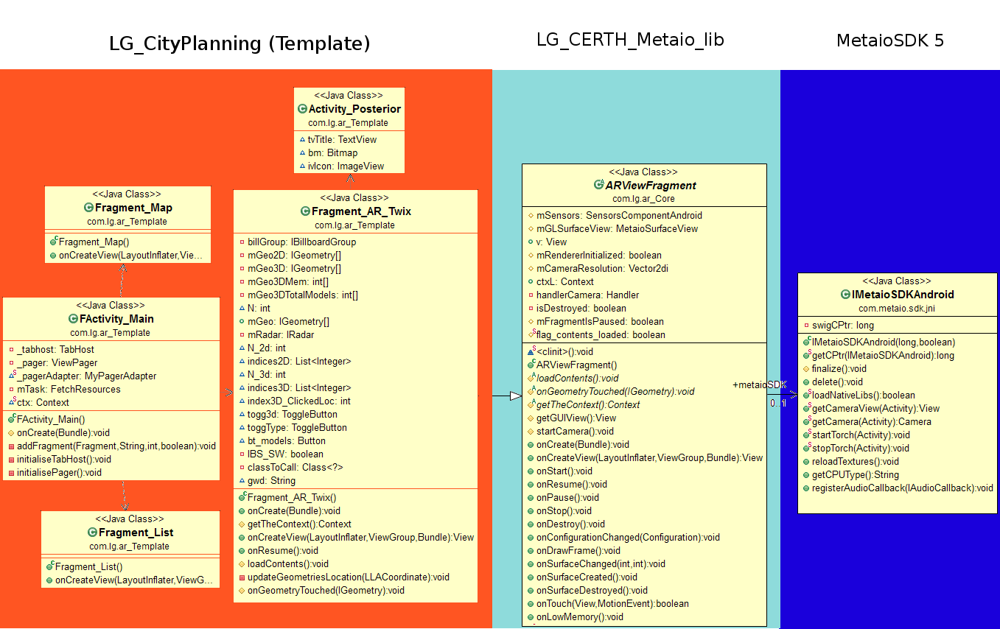

CERTH has developed a library (LG_CERTH_Metaio_lib) to be used in any template app (e.g. LG_CityPlanning) in order to implement AR. The library acts as an intermediate connector between the MetaioSDK5 library and the template. One feature of the CERTH library is that implements ARView as a fragment that can be inserted into a tabhost next to a map and a list view. A functionality that was not included in the MetaioSDK5. An additional innovation is that both Location Based AR and Image Based AR functionalities are in the same fragment. The user can switch between the two ARs with a toggle button without having to reload the metaioSDK object.
The app visualizations are shown in Figure 1. The Template consists of the main activity implemented by FActivity_Main.java which contains the tabhost for 'Map' implemented by Fragment_Map, 'AR' implemented by Fragment_AR_Twix.java, and 'List' implemented by Fragment_List.java fragment.
The Fragment_AR_Twix.java implements both LBS and IBS AR by the following way. The fragment starts by loading the LBS channel and showing only the billboards and two buttons: The first button is a Toggle button (togg3d) which toggles between LBS 3d models and LBS billboards. The second button switches between LBS, IBS, and IBS* channels. In the LBS mode the actions are coded in the following way:
Most information about the urls and the local paths is included in:
LG_CERTH_Metaio_lib.com.lg.ar_Core.Constants_API.java
and the main function to download and store data is the:
LG_CityPlanning.com.lg.ar_Template.FetchResources.java
ServerName = "http://augreal.mklab.iti.gr";
url_php_LBS = ServerName + "/api_AREL/LBS/index.php";
url_php_IBS = ServerName + "/api_AREL/IBS/index.php";
localFolderSTR = "sdcard0/data/MetaioSDK";fn_local_LBS_xml = localFolderSTR + "/LBS/arel.xml";
fn_local_IBS_xml = localFolderSTR + "/IBS/arel.xml";folder_Models3D = localFolderSTR + "/Models3D_DB";
List<Entity> entitiesLBSList<Entity> entitiesIBS
If there are errors: Clean all projects by [Project->Clean], delete 'gen' folders in each project,
close all projects and reopen them. Then wait 5 seconds until the 'gen' folder is generated.
You can now run the 'LG_CityPlanning'.
The MetaioSDK API key can be found in 'LG_CityPlanning' -> res -> values -> signature.
It depends on the package name of the project which is found in Android Manifest, and it is 'com.lg.ar_Template',
and it also depends on the appname 'CityPlanning' which is found in res->values->strings.
By changing one of the above, the AR functionality will not be available. In order to generate
a new API key, go to metaioSDK site: http://www.metaio.com/sdk/ , log in and follow the instructions.